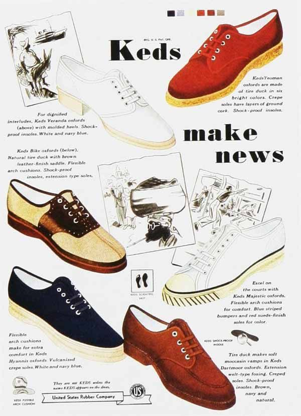

the earliest form of “sneakers” originated from the late 18th century called plimsolls, leather soles were attached to a… by the 1920’s athletes would wear rubber stoles on leather loafers before they became mass produced and popularized in everyday fashion.
first mass produced sneakers:
